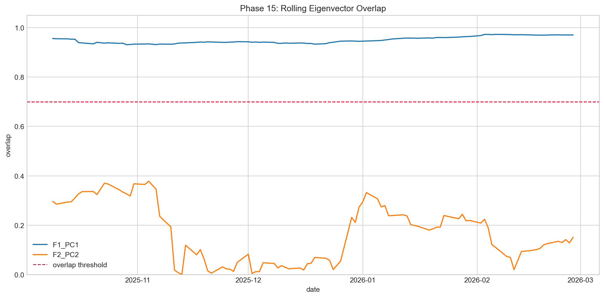
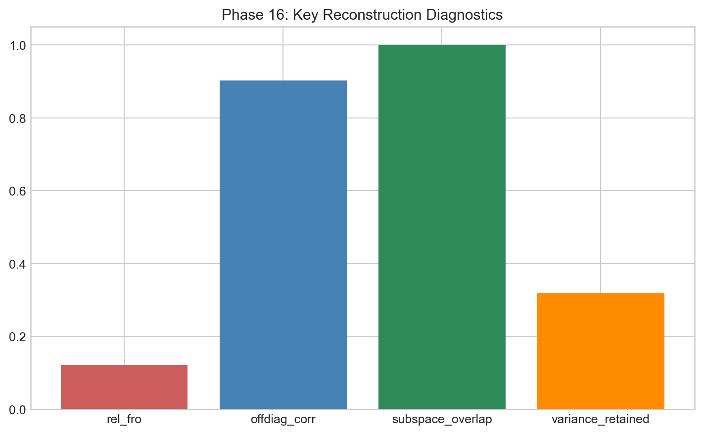

Stability and Reconstruction
This post is where trust is tested: first for factor stability, then for reconstruction fidelity.
The stage is split into two checks. Geometric stability evaluates overlap and angle behavior across windows and subsamples. Reconstruction fidelity evaluates how much structure survives filtering and whether numerical pathologies are reduced.
Stability reality from phase outputs
Across reruns, PC1 remains consistently stable while PC2 rotates more aggressively. In strict and audit contexts, PC1 overlap stays in a practical high-stability zone, and outlier-drop variants do not alter that conclusion in a material way.
The following sequence moves from legacy intuition charts to phase-15 stability diagnostics that quantify overlap distributions and split-level coherence.





Reconstruction side
Filtered reconstruction produces cleaner matrices with strong off-diagonal fidelity and improved numerical behavior. This is interpreted as controlled denoising, not full recovery of all raw structure.
The chart block below compares raw versus filtered geometry, then quantifies error and diagnostic behavior in phase-16 outputs.



Working interpretation
PC1 functions as the anchor, PC2 as a warning signal, and reconstruction as a filter rather than a miracle estimator. That framing remains consistent with later regime and predictive stages.
Shared reference
Dictionary: same terminology map used across all pages.